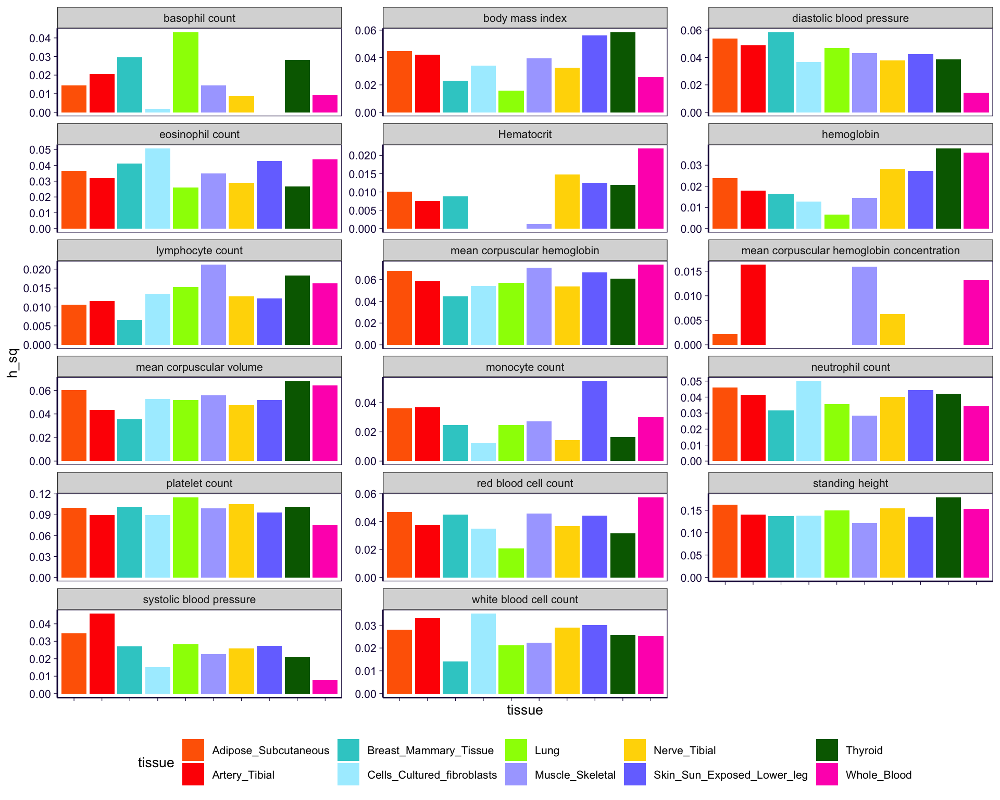
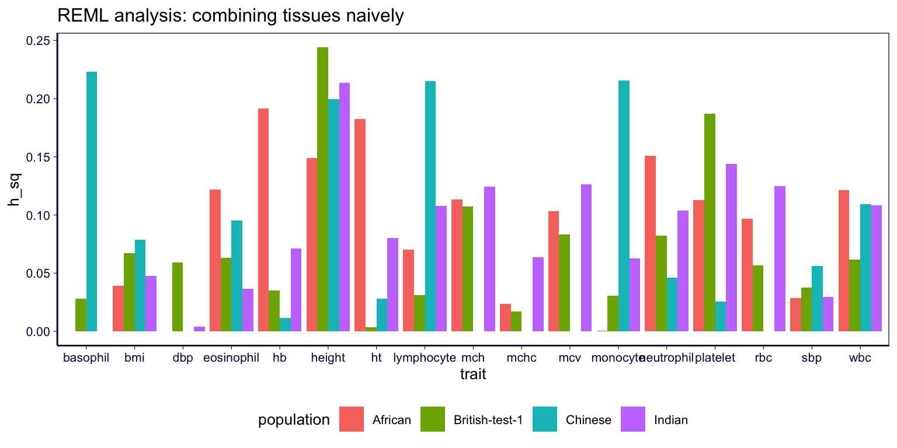
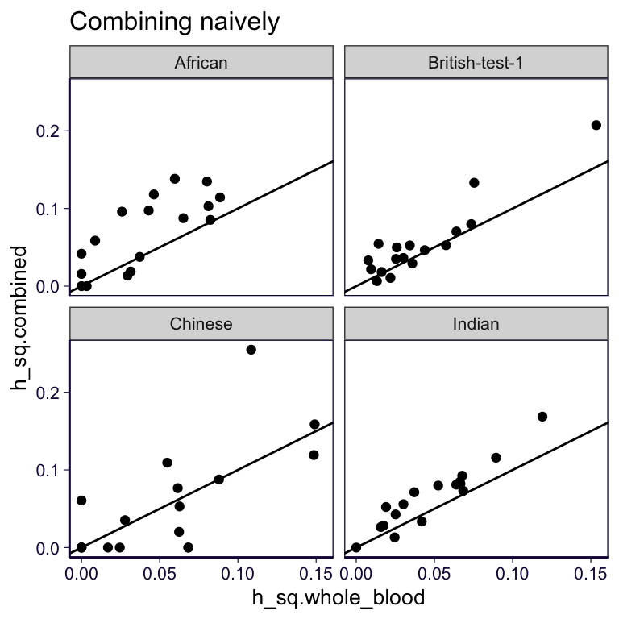
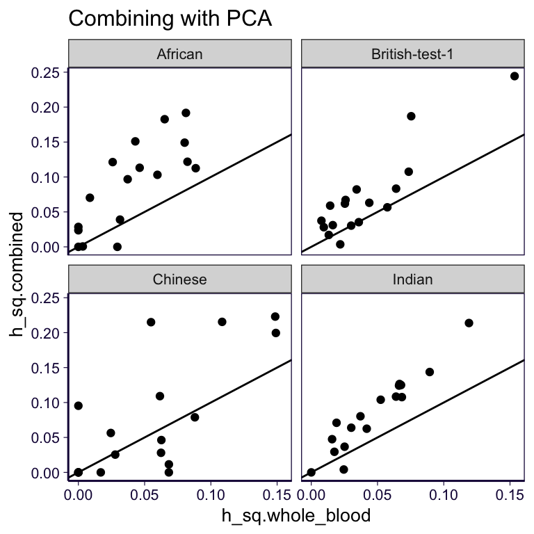

Regulability based on predicted expression: GTEx v8 UTMOST models in ten tissues
library(ggplot2)
library(dplyr)
library(pander)
options(stringsAsFactors = F)
source('../code/rlib_doc.R')
source('https://gist.githubusercontent.com/liangyy/43912b3ecab5d10c89f9d4b2669871c9/raw/8151c6fe70e3d4ee43d9ce340ecc0eb65172e616/my_ggplot_theme.R')
th$panel.border = element_rect(colour = th$axis.line$colour)
theme_set(theme_bw(base_size = 10))
gtex_color = read.csv('~/Documents/repo/bitbucket/rotation-at-imlab/data/gtex_tissue_colors.csv')
gtex_color$tissue_site_detail_id[gtex_color$tissue_site_detail_id == 'Cells_Transformed_fibroblasts'] = 'Cells_Cultured_fibroblasts'
color_board = paste0('#', gtex_color$tissue_color_hex)
names(color_board) = gtex_color$tissue_site_detail_id
trait_info = read.table('../external_data/martin_et_al_2019ng_table_s6_trait_description.tsv', header = T, sep = '\t')
trait_info$short = tolower(trait_info$short)1 Load results
Load CTIMP results.
tissues = read.table('~/Desktop/tmp/tissue_list.txt', header = F)$V1
pops = c('African', 'British-test-1', 'Chinese', 'Indian')
df = list()
for(t in tissues) {
for(p in pops) {
t = stringr::str_remove(t, 'ctimp_')
filename = paste0('/Users/yanyul/Desktop/tmp/gcta_regu/reml_from_hail_martin_et_al_traits_x_ctimp_', t, '_x_', p, '.tsv')
df[[length(df) + 1]] = read.table(filename, header = T, sep = '\t') %>% mutate(population = p, tissue = t)
}
}
df = do.call(rbind, df)
df = left_join(df, trait_info, by = c('trait' = 'short'))
df[is.na(df)] = 02 Results
2.1 By tissue REML
df %>% select(num_predictors, tissue) %>% filter(!duplicated(tissue)) %>% pander| num_predictors | tissue |
|---|---|
| 9228 | Adipose_Subcutaneous |
| 9027 | Artery_Tibial |
| 8127 | Breast_Mammary_Tissue |
| 8731 | Cells_Cultured_fibroblasts |
| 8954 | Lung |
| 7671 | Muscle_Skeletal |
| 10184 | Nerve_Tibial |
| 9474 | Skin_Sun_Exposed_Lower_leg |
| 9827 | Thyroid |
| 7041 | Whole_Blood |
df %>% filter(population == 'British-test-1') %>% ggplot() + geom_bar(aes(x = tissue, y = h_sq, fill = tissue), stat = 'identity') + facet_wrap(~long, ncol = 3, scales = 'free_y') + scale_fill_manual(values = color_board) + theme(legend.position = 'bottom', axis.text.x = element_blank()) + th
2.2 Combining tissues naively
Let \([X_1, \cdots, X_k]\) be the “genotype matrix”. The assumption is that \(\beta \sim N(0, \sigma^2)\) is the same for all genes in all tissues.
df_naive = list()
for(pop in pops) {
tmp = read.table(paste0('~/Desktop/tmp/gcta_regu/reml_from_hail-multi-tissue-naive_x_martin_et_al_traits_x_ctimp_x_', pop, '.tsv'), header = T, stringsAsFactors = F, sep = '\t')
df_naive[[length(df_naive) + 1]] = tmp %>% mutate(population = pop)
}
df_naive = do.call(rbind, df_naive)
df_naive[is.na(df_naive)] = 0
df_naive %>% ggplot() + geom_bar(aes(x = trait, y = h_sq, fill = population), stat = 'identity', position = 'dodge') + theme(legend.position = 'bottom') + th + ggtitle('REML analysis: combining tissues naively')
2.3 Combining tissues with PCA
df_pca = list()
for(pop in pops) {
tmp = read.table(paste0('~/Desktop/tmp/gcta_regu/reml_from_hail-multi-tissue-tissue_svd_x_martin_et_al_traits_x_ctimp_x_', pop, '.tsv'), header = T, stringsAsFactors = F, sep = '\t')
df_pca[[length(df_pca) + 1]] = tmp %>% mutate(population = pop)
}
df_pca = do.call(rbind, df_pca)
df_pca[is.na(df_pca)] = 0
df_pca %>% ggplot() + geom_bar(aes(x = trait, y = h_sq, fill = population), stat = 'identity', position = 'dodge') + theme(legend.position = 'bottom') + th + ggtitle('REML analysis: combining tissues naively')
Combined vs. Whole blood.
merge = inner_join(
df_naive %>% select(trait, population, h_sq, h_sq_se),
df %>% filter(tissue == 'Whole_Blood') %>% select(trait, population, h_sq, h_sq_se),
by = c('trait', 'population'),
suffix = c('.combined', '.whole_blood')
)
merge %>% ggplot() + geom_point(aes(x = h_sq.whole_blood, y = h_sq.combined)) + facet_wrap(~population) + geom_abline(slope = 1, intercept = 0) + th + ggtitle('Combining naively')
merge_eur = merge %>% filter(population == 'British-test-1')
tmp = delta_mtd(merge_eur$h_sq.combined, merge_eur$h_sq_se.combined ^ 2, merge_eur$h_sq.whole_blood, merge_eur$h_sq_se.whole_blood ^ 2)
merge_eur$ratio = tmp$m
merge_eur$ratio_se = sqrt(tmp$v)
data.frame(meta_fixed(merge_eur$ratio, merge_eur$ratio_se)) %>% pander(caption = 'PVE in multi-tissue (naive approach) over PVE in whole blood')| m | se |
|---|---|
| 1.197 | 0.1586 |
merge = inner_join(
df_pca %>% select(trait, population, h_sq, h_sq_se),
df %>% filter(tissue == 'Whole_Blood') %>% select(trait, population, h_sq, h_sq_se),
by = c('trait', 'population'),
suffix = c('.combined', '.whole_blood')
)
merge %>% ggplot() + geom_point(aes(x = h_sq.whole_blood, y = h_sq.combined)) + facet_wrap(~population) + geom_abline(slope = 1, intercept = 0) + th + ggtitle('Combining with PCA')
merge_eur = merge %>% filter(population == 'British-test-1')
tmp = delta_mtd(merge_eur$h_sq.combined, merge_eur$h_sq_se.combined ^ 2, merge_eur$h_sq.whole_blood, merge_eur$h_sq_se.whole_blood ^ 2)
merge_eur$ratio = tmp$m
merge_eur$ratio_se = sqrt(tmp$v)
data.frame(meta_fixed(merge_eur$ratio, merge_eur$ratio_se)) %>% pander(caption = 'PVE in multi-tissue (PCA) over PVE in whole blood')| m | se |
|---|---|
| 1.481 | 0.1956 |